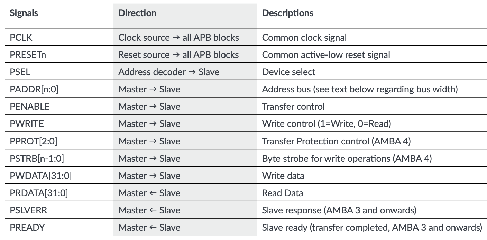
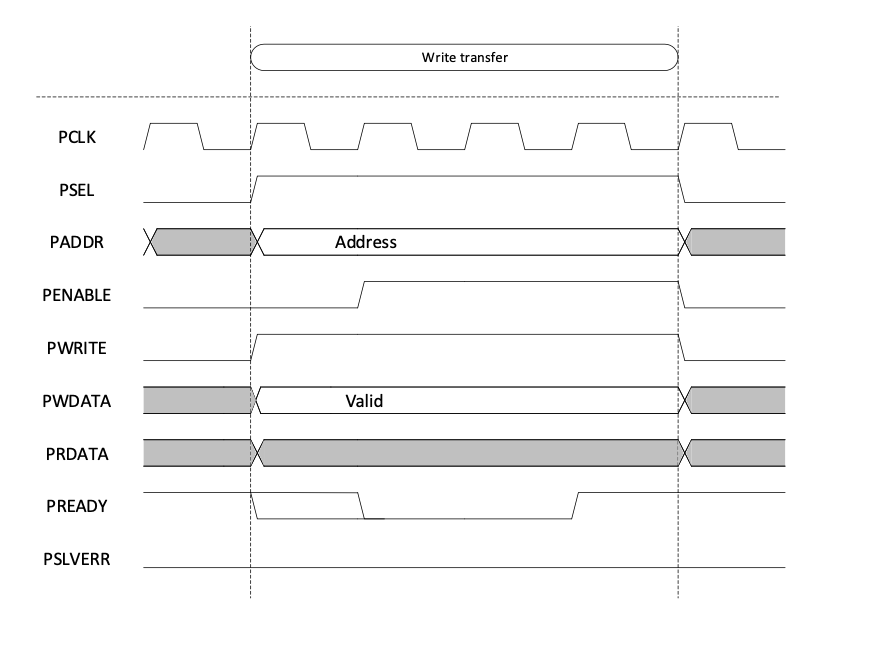
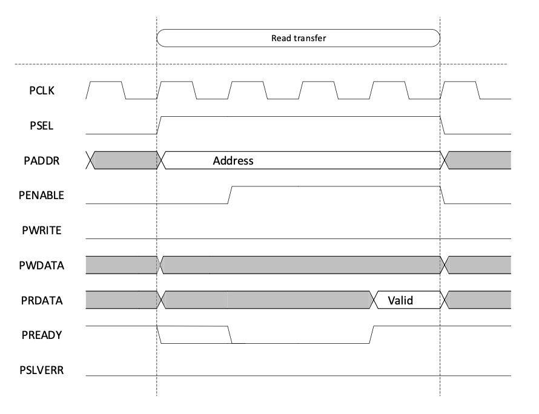
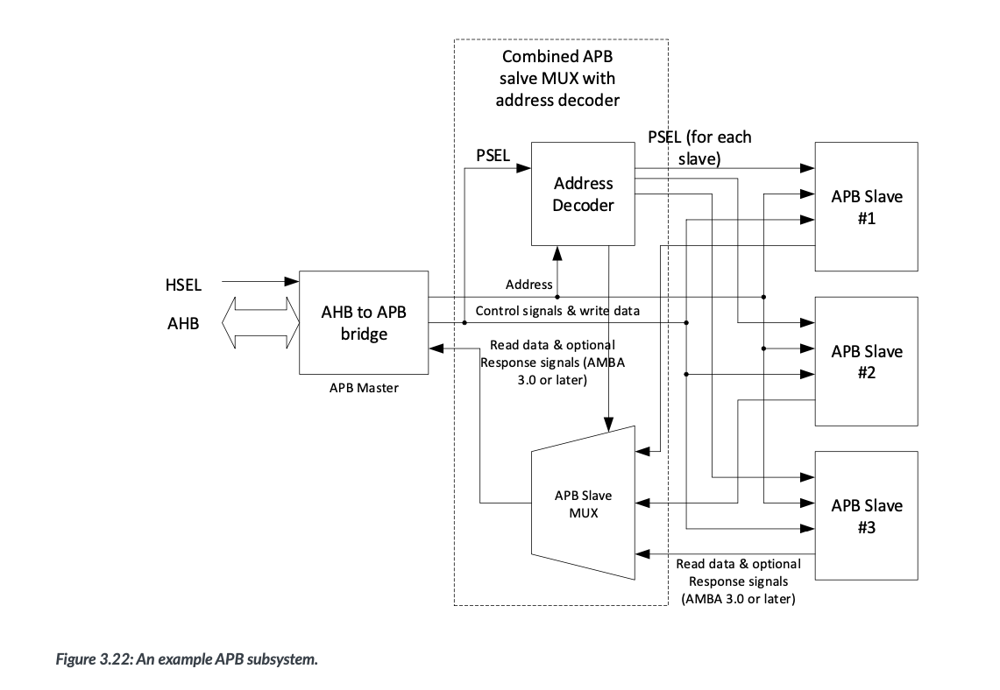

APB (Advanced Peripheral Bus) Interview Questions and Answers¶
1. What is the APB bus, and where is it used?¶
APB (Advanced Peripheral Bus) is a low-power, low-bandwidth bus used in the AMBA (Advanced Microcontroller Bus Architecture) for connecting peripheral devices like UART, SPI, I2C, GPIO, and timers. It provides a simple interface compared to high-performance buses like AHB and AXI.
2. What are the key signals in APB?¶
📌 APB Signals:

3. What is the APB write transaction sequence?¶
An APB write transaction consists of two main phases:
1. Address Phase¶
- The master initiates the transaction by asserting
PSEL = 1(slave select),PWRITE = 1(write operation),PADDR(target register address), andPWDATA(data to be written).
2. Data Phase¶
If no wait states are inserted (PREADY=1 immediately), the data phase consists of a single clock cycle where the transaction completes. If the slave requires more time, it inserts wait states, causing the data phase to be split into two sub-phases:
2.1 Enable Phase¶
- The master asserts
PENABLE=1in the next clock cycle. - The slave starts processing the write request.
- If the slave is not ready, it holds
PREADY=0, inserting wait states.
2.2 Completion Phase¶
- When the slave is ready (
PREADY=1), the transaction completes. The master deassertsPENABLE=0.
📌 APB Write Transfer Timing Diagram (with 3 Wait States):

4. What is the APB read transaction sequence?¶
An APB read transaction follows the same structure as the write transaction, except that the master reads data instead of writing it.
1. Address Phase¶
- The master initiates the read transaction by asserting
PSEL = 1(slave select),PWRITE = 0(read operation), andPADDR(target register address).
2. Data Phase¶
If no wait states are inserted (PREADY=1 immediately), the data phase completes in one clock cycle. If the slave needs more time, the data phase is split into two parts:
2.1 Enable Phase¶
- The master asserts
PENABLE=1in the next clock cycle. - The slave retrieves the requested data.
- If the slave is not ready, it holds
PREADY=0, inserting wait states.
2.2 Completion Phase¶
- When the slave has valid data (
PREADY=1): PRDATAcontains the requested value.- The master deasserts
PENABLE=0, completing the read.
📌 APB Read Transfer Timing Diagram (with 3 Wait States):

5. How does APB differ from AHB and AXI?¶
APB (Advanced Peripheral Bus)¶
- APB follows a non-pipelined structure, meaning the address and data phases occur separately.
- Each transaction consists of an address phase followed by a data phase, which can include wait states if the slave is not ready.
- No burst transfer support; each transaction is independent.
- Designed for low-power, low-bandwidth peripherals like UART, I2C, SPI, and GPIO.
AHB (Advanced High-performance Bus)¶
- AHB follows a pipelined structure, allowing the address phase for transaction N to execute while the data phase for transaction N-1 is completing.
- This pipelining increases bus efficiency by overlapping transactions.
- Supports burst transfers, allowing multiple data transactions to occur sequentially after a single address phase.
- Uses a single master with multiple slaves architecture, where arbitration ensures only one master controls the bus at a time.
AXI (Advanced eXtensible Interface)¶
- AXI allows out-of-order execution and parallel transactions using separate read and write address/data channels.
- Unlike AHB, AXI supports multiple outstanding transactions without requiring them to be completed in order.
- Provides higher bandwidth by allowing independent reads and writes.
- Frequently used in high-performance applications like multi-core processors, memory controllers, and networking devices.
6. How does APB fit into an SoC? Explain an APB system.¶
APB is used to connect low-bandwidth peripherals to a high-performance system bus. Since APB does not support pipelining or burst transfers, it is typically connected via an AHB-to-APB or AXI-to-APB bridge.
Components of an APB system:¶
- AHB/APB Bridge: Converts AHB (or AXI) transactions into APB transactions.
- Address Decoder: Selects the appropriate APB slave based on
PADDR. - APB Slave MUX: Handles data multiplexing from multiple APB slaves and forwards it to the APB bridge.
- APB Slaves: Peripheral devices like UART, GPIO, I2C, SPI, timers, etc.
APB Transfer Flow:¶
- AHB/AXI Master initiates a request.
- AHB/APB Bridge converts the request to APB format.
- Address Decoder activates the correct
PSELsignal for the slave. - APB Slave MUX ensures the correct data path between multiple APB slaves and the master.
- APB transaction completes using
PENABLE,PREADY,PWDATA, andPRDATA.
📌 Example APB System Diagram:

7. What is the role of PREADY in APB?¶
PREADY = 0→ Slave needs more time to process the request.PREADY = 1→ Slave completes the transaction.
8. Why does APB have two phases (Address + Data)?¶
- Address phase allows setup of signals.
- Data phase ensures data stability.
- This prevents timing hazards and simplifies slave logic.
9. What happens if PENABLE is asserted before PSEL?¶
- The transaction is invalid, as
PSELmust be set first.
10. What happens if PREADY is always high?¶
- APB transfers will always complete in one clock cycle.
11. What is the function of PSLVERR in APB?¶
- If
PSLVERR=1, it indicates an error response from the slave.
12. Can APB handle multiple outstanding transactions?¶
- No, APB only supports one active transaction at a time.
13. How does APB handle clock domain crossings?¶
- Usually synchronizers or bridges (e.g., AHB to APB bridge) are used.
14. Why is APB not pipelined?¶
- APB follows a simple two-phase protocol, making it easier to implement and lower in power.
15. What is the impact of PENABLE deassertion?¶
- If
PENABLE=0, the transfer is not completed.
16. Can PWRITE change during a transaction?¶
- No,
PWRITEmust remain stable once the transfer starts.
17. What happens if the slave never asserts PREADY?¶
- The master waits indefinitely, causing a hang.
18. How can a master abort an APB transaction?¶
- By deasserting
PSEL, the transfer is canceled.
19. How is an APB slave selected?¶
- The APB bridge decodes the address (
PADDR) and setsPSELaccordingly.